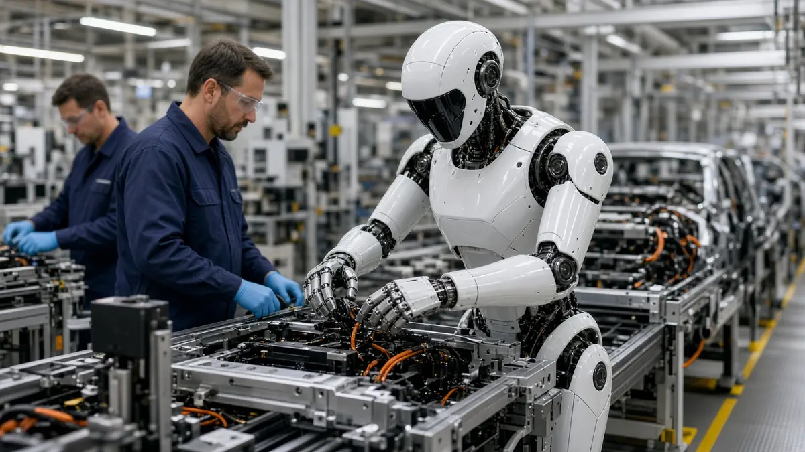

Tesla
Tesla targets end of 2027 for external Optimus deliveries, Musk says
Short answer: Elon Musk said on Tesla's Q3 2026 earnings call that Tesla expects to begin delivering Optimus robots to outside customers around the end of 2027, once open issues with the AI, the hardware design and reliability are resolved, according to Electrek's report of the call.
Musk said Tesla has started early Optimus production at its Fremont factory in California, in an area that previously built Model S and Model X cars. He said most of the equipment for a line sized for one million robots a year is in place, but that reaching that pace could take a year or more because the design is still changing.

Asked what was still changing, a Tesla Optimus engineer pointed to the robot's hand and to custom gears with outstanding reliability concerns, Electrek reported. On AI, Musk said Tesla plans to build 10,000 to 20,000 robots to practise tasks in a programme it calls the "Optimus Academy", and to fit its AI5 chip to Optimus around April 2027.
Tesla expects its first outside customers to use Optimus for industrial work that is dangerous, repetitive or runs around the clock, Electrek reported. Electrek also notes that Tesla's earlier public targets for Optimus production and external sales were set for earlier years than this one.